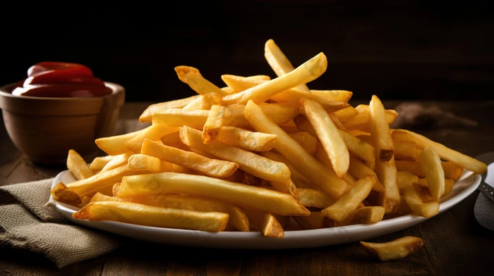

Papas fritas
Receta de papas fritas caseras.

Ingredientes
- 3 o 4 de papas (300g.)
- 4 dientes de ajo
- Aceite de oliva
- Sal
Elaboracion (pasos)
- Calentar aceite en una sartèn.
- Añadir las papas cortadas, la sal y los ajos.
- Freir al gusto.
- Servir en el plato.